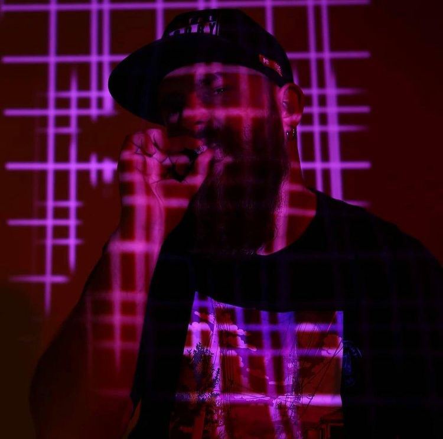
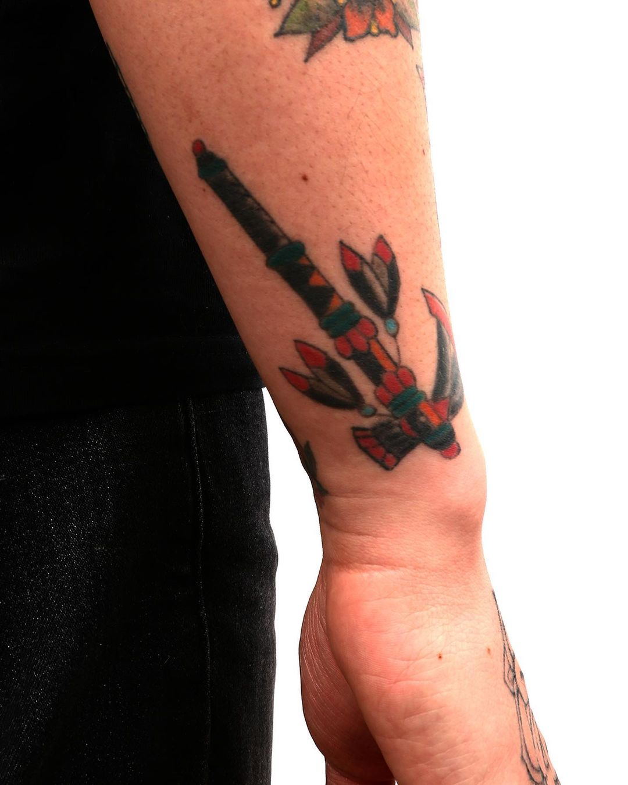
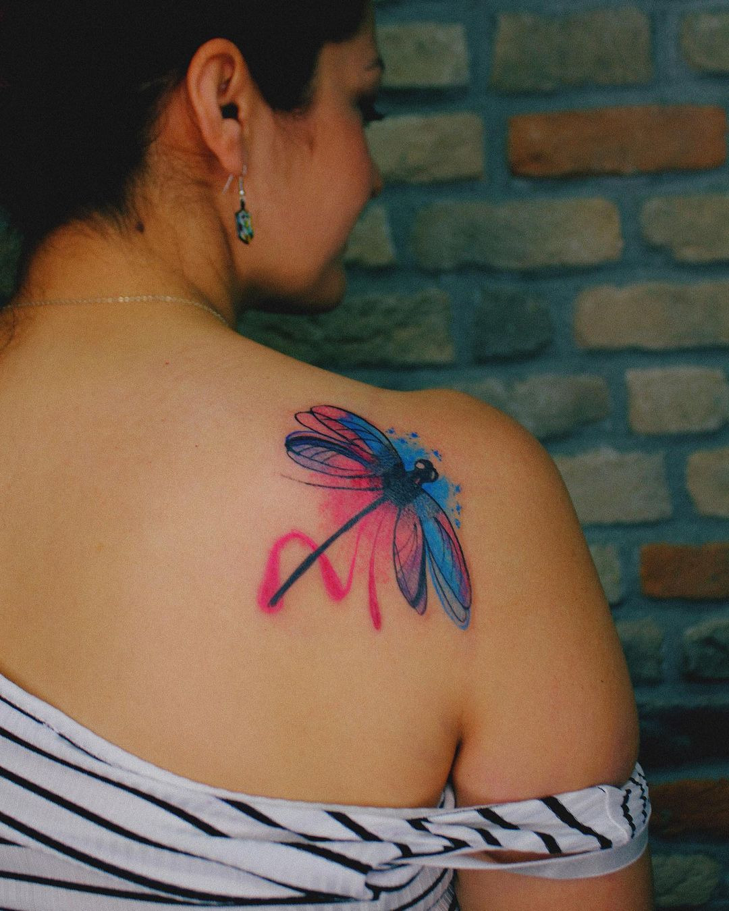

Who Am I?
I was born in 1996 in Antalya. I graduated from Selcuk University Literature Faculty Comparative Literature Department and made my masters degree from Gazi University Communication Faculty Radio Television and Cinema Department. I have been doing tattoos for 2 years. I have worked with too many famous tattoo studios like Sullen Art Collective, Cleopatra Ink, etc. Now I am working with Art Tattoo in Ankara. I have achieved being a Tattoo Artist sponsored by Redline Tattoo Supply. My life goal is to travel around the world, meet new people and reflect on my art.
Social Links
Gallery



Sponsors